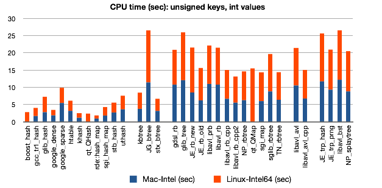
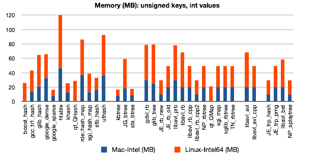
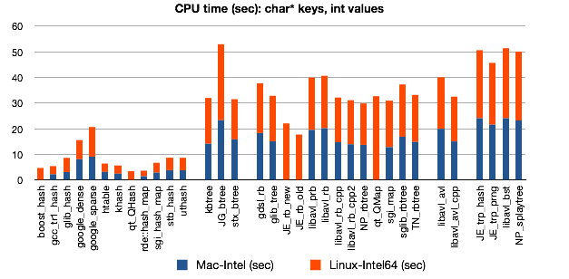

Introduction
Dictionary is a type of data structure that supports fast retrieval of key-value pairs. Hashtable, B-tree and binary search trees are among the most frequently used dictionary data structures.
This page benchmarks various C/C++ dictionary libraries. You may see a similar page elsewhere, but I can assure you that this page is the origin and the latest.
Design of the Benchmark
Data generation
To benchmark dictionary with integer keys, a random integer array of 5 million elements is generated with about 1.25 million distinct keys. Each element is then tested whether it is present in the dictionary. If the element is in the dictionary, it will be removed; otherwise, it will be inserted. 625,792 distinct keys will be left in the dictionary after this process. To benchmark dictionary with string keys, the same integer array is converted to char* array using sprintf().
Configuration and compilation
All programs are compiled on Intel-Mac (OS X 10.5, 32-bit gcc-4.2) and Intel-Linux (Debian etch, 64-bit gcc-4.1) with the command-line option: `-g -Wall -O2 -fomit-frame-pointer'.
Source code
Benchmark programs are available as udb-latest.tar.bz2. This tar-ball also includes a small program that checks the peak memory usage and a table in Numbers from which the plots below were generated. When you extract the tar-ball, directories with name beginning with underscore contain programs which require pre-installation of libraries; other directories can be compiled straight out of box.
Included libraries
Hash table
- boost_hash: Boost unordered_map C++ template hash table (chaining). Require the Boost library. No data for Intel-Mac.
- gcc_tr1_hash: g++-4 TR1 unordered_map C++ template hash table (chaining).
- glib_hash: Glib C hash table (chaining). Require glib.
- google_dense: google dense hash table (C++, quadratic probing). Library source codes are included.
- google_sparse: google sparse hash table (C++, quadratic probing). Library source codes are included. This library use 1 bit to represent an unused bucket and therefore is highly memory efficient.
- htable: C hash table (chaining). Someone sent me this library with email, which I have lost unfortunately. I cannot find who is the author. Sorry.
- khash: my C macro hash table (double hashing). This library has been used in bwa, samtools and several of my other projects. It features a good balance between speed and memory.
- qt_QHash: QT C++ hash table (in fact a skipped list). Require QT.
- rde::hash_map: RDE C++ template hash table (linear probing). Library source codes are included. This library caches hashes of keys, which helps speed at the cost of more memory usage.
- sgi_hash_map: SGI STL C++ template hash table (chaining). Although this library is not part of any standard, it is probably most widely used.
- stb_hash: STB (Sean's Tool Box) C marco hash table (double hashing?).
- uthash: a hash table for C structures (chaining).
B-tree
- JG_btree: John-Mark Gurney's B-tree library in C.
- kbtree: my C macro B-tree modified from JG_btree. Kbtree does not allocate null pointers at leaf nodes and achieves smaller memory footprint. I have also optimized JG_btree a bit, as you can see from the benchmark.
- stx_btree: STX B+-tree template class. A high-performance library with STL interface, slightly outperforming my kbtree. Highly recommended!
Red-black tree
- gdsl_rb: red-black tree implementation from the GDSL C library. Standard red-black tree implementation with three pointers in each node.
- glib_tree: red-black tree from the glib C library. Three pointers in each node.
- JE_rb_new and JE_rb_old: from Jason Evans' C macro tree library. JE_rb_new implements a left-leaning red-black tree with each node having two pointers. The color bit is folded into the lowest bit of a pointer. JE_rb_old has three pointers in each node.
- libavl_prb and libavl_rb: from libavl in C. Libavl_prb has three pointers in each node and libavl_rb has two.
- libavl_rb_cpp and libavl_rb_cpp2: my C++ port of libavl_rb. Libavl_rb_cpp2 also folds the color bit into the lowest bt of a pointer, similar to JE_rb_new.
- NP_rbtree: Niels Provos' tree library for FreeBSD using C macros. Standard 3-pointer implementation.
- qt_QMap: from the QT C++ library. Algorithm unknown.
- sgi_map: red-black tree implementation from SGL STL.
- sglib_rbtree: from the SGLIB C macro library. This is the only red-black tree implementation using recursion.
- TN_rbtree: Thomas Niemann's red-black tree. I ported it to C++ quite some time ago.
AVL tree
- libavl_avl: also from libavl (in C).
- libavl_avl_cpp: C++ port of libavl_avl by me.
Other binary search tree
- JE_trp_hash and JE_trp_random: also from Jason Evans' tree library.
- libavl_bst: unbalanced binary search tree from libavl.
- NP_splaytree: splay tree implemented by Niels Provos.
Results
The following figures show the results which are also available as this PDF file where the data table is also included.
  
Discussions
C pointers vs. C macros vs. C++ templates
For generic programming in C, people usually use `void*' pointers to work with type-independent data. However, this always comes with the cost of a pointer for each key. For small keys like integers, the cost is considerable. In C, a better way is to use macros. This way also avoids the overhead on retrieving the data pointed by `void*' pointers. In most cases, implementations with macros achieve the same speed as fully optimized type-specific implementations. To some extend, C++ templates extend the ability of C macros. They are usually more convenient, but on efficiency they do not do better than C macros.
In this benchmark, libavl_rb_cpp is a literal translation of libavl_rb by replacing `void*' pointers to keys with actual keys. This simple change makes libavl_rb_cpp both faster and more light-weight.